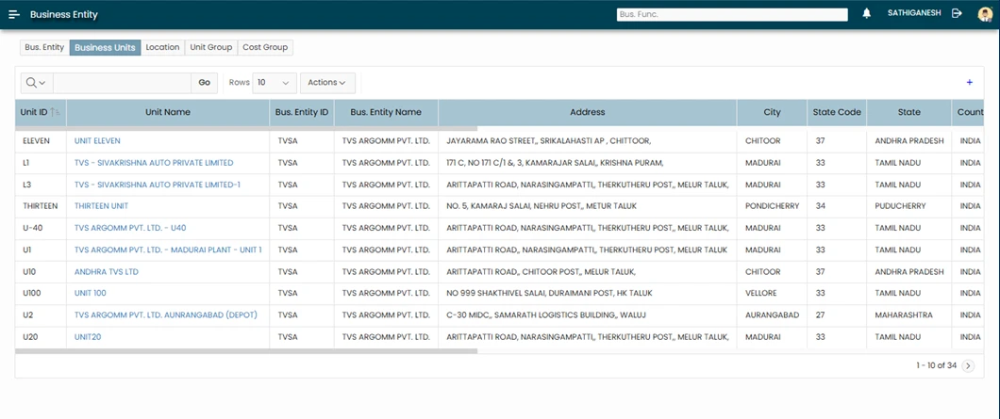
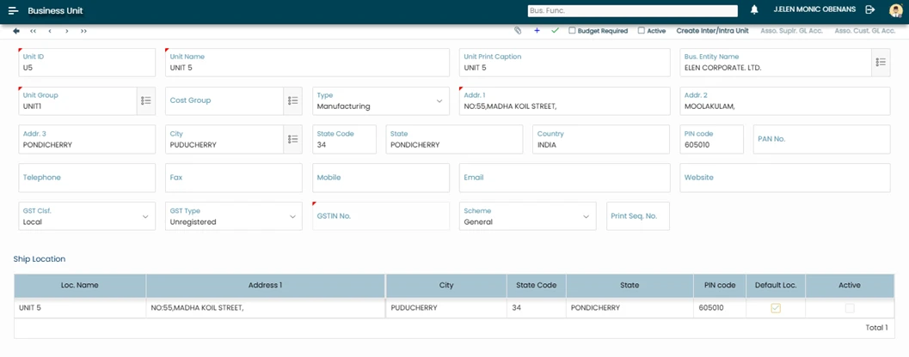
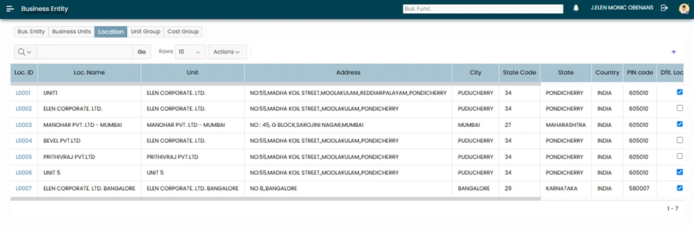
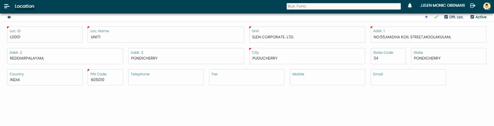
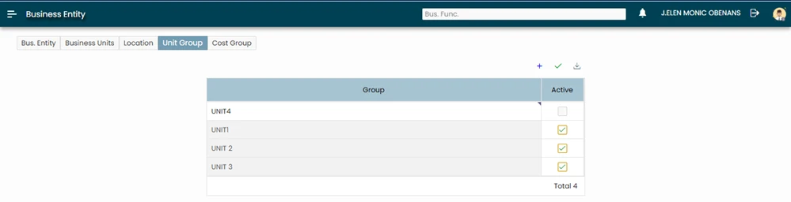

<div data-category="Financials" data-title="Business Unit" data-updated="December 01, 2025" data-contributors="RoadmapIT" data-breadcrumb="Home,Financials,Business Unit">
  <div class="page-content">
    <p>A business unit refers to a distinct division within a company that operates independently from the core business or brand. It develops and implements its own processes while still adhering to the overall company policies.</p>
    <p>This screen is used to create a Business Unit.</p>
    <h5>Navigation path:</h5>
    <p>Setup \ Business Entity \ Business Unit</p>
    
    <ul style="list-style-type: none; align-content: center">
      <li class="mouse-icon">User can view all the created business Units in this screen.</li>
      <li class="mouse-icon">
        Click
        <i class="bi bi-plus fs-4 mx-2 text-primary"></i>
        to create a new Business Unit.
      </li>
    </ul>
    <figure class="text-center mb-3">
      
      <!-- <figcaption class="mt-2 text-muted">Fig:1.2 Business Unit</figcaption> -->
    </figure>
    <ul style="list-style-type: none; align-content: center">
      <li class="mouse-icon">Enter the Business Unit ID/Name Description.</li>
      <li class="mouse-icon">Select the BE from LOV.</li>
      <li class="mouse-icon">Select Unit Group from LOV.</li>
      <li class="mouse-icon">Enter the Address.</li>
      <li class="mouse-icon">Select city from LOV.</li>
      <li class="mouse-icon">Select Type - Manufacturing.</li>
      <li class="mouse-icon">Enter the GST Details.</li>
      <li class="mouse-icon">
        After given the All details click
        <i class="bi bi-check-lg fs-4 mx-2 text-success"></i>
        to save.
      </li>
      <li class="mouse-icon">Click Activate button to activate the Business unit.</li>
    </ul>
    <h2 class="text-uppercase">Location</h2>
    
    <ul style="list-style-type: none; align-content: center">
      <li class="mouse-icon">User can view all the created location in this screen.</li>
      <li class="mouse-icon">
        Click
        <i class="bi bi-plus fs-4 mx-2 text-primary"></i>
        to create a new a new Location.
      </li>
    </ul>
    
    <ul style="list-style-type: none; align-content: center">
      <li class="mouse-icon">Enter Loc ID.</li>
      <li class="mouse-icon">Enter location name.</li>
      <li class="mouse-icon">Select the Unit & City from LOV.</li>
      <li class="mouse-icon">
        Click
        <i class="bi bi-check-lg fs-4 mx-2 text-success"></i>
        to save.
      </li>
      <li class="mouse-icon">Check Dflt.Loc. checkbox for Unit Location and Check the Active checkbox.</li>
    </ul>
    <h2>Unit Group</h2>
    
    <ul style="list-style-type: none; align-content: center">
      <li class="mouse-icon">
        Click
        <i class="bi bi-plus fs-4 mx-2 text-primary"></i>
        to create a new Unit group.
      </li>
      <li class="mouse-icon">Enter Unit Group name.</li>
      <li class="mouse-icon">
        Click
        <i class="bi bi-check-lg fs-4 mx-2 text-success"></i>
        to save and the active checkbox will be enabled automatically.
      </li>
      <li class="mouse-icon">Enter the Group name and click on the Active checkbox to activate the Unit Group.</li>
      <li class="mouse-icon">
        User can download the unit group details by clicking the download button
        <i class="bi bi-download fs-4 mx-2 px-2 text-muted"></i>
        , with options such as CSV, HTML, PDF and Excel.
      </li>
    </ul>
  </div>
</div>
